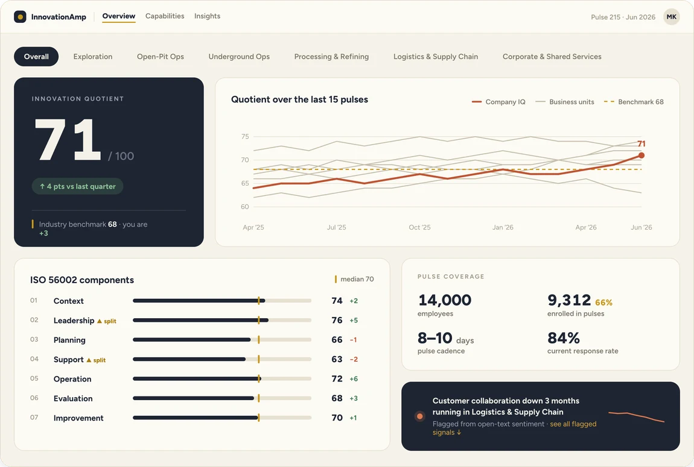
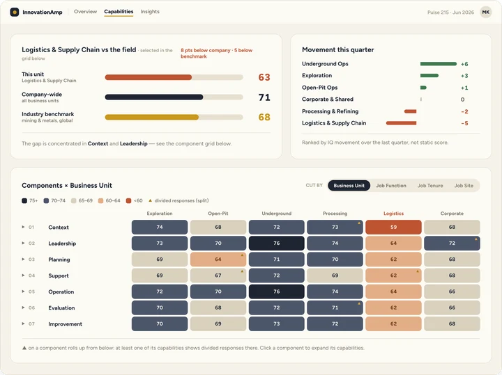
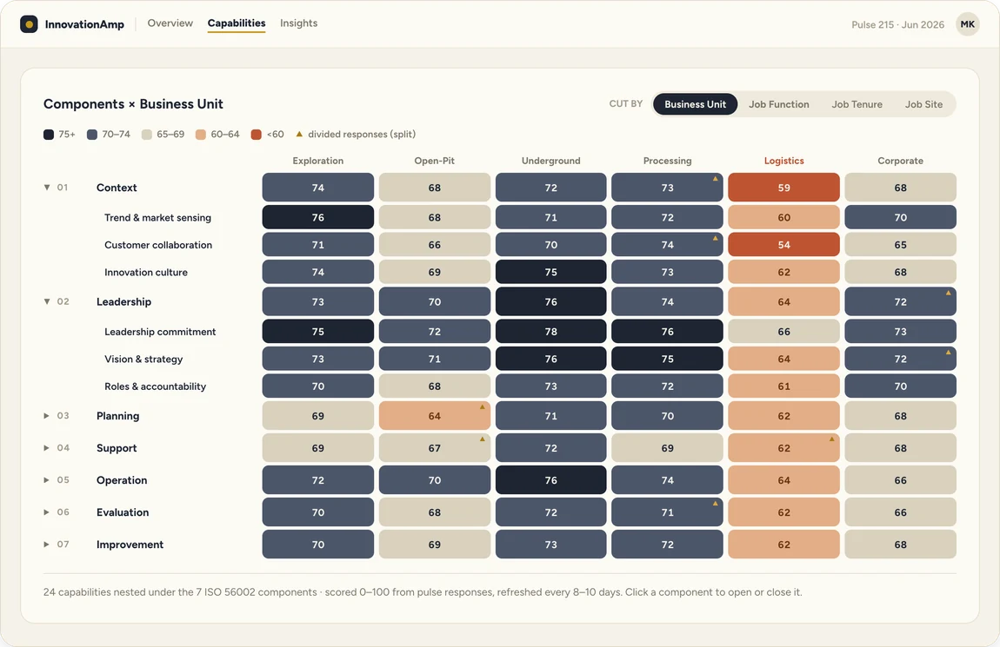
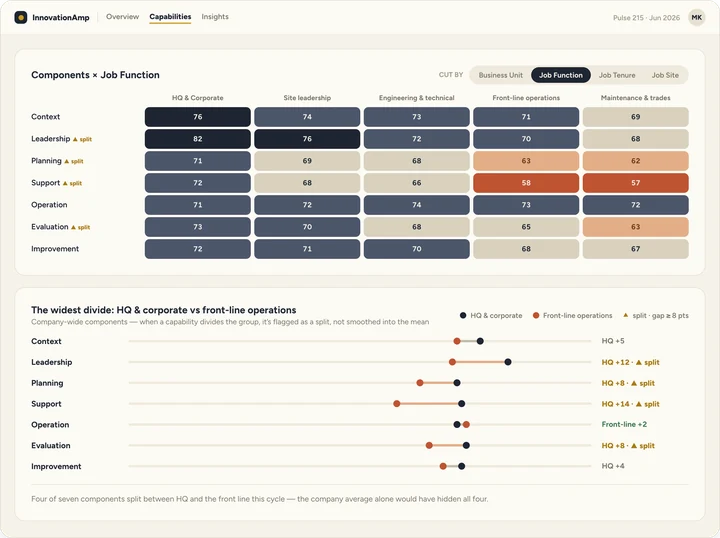
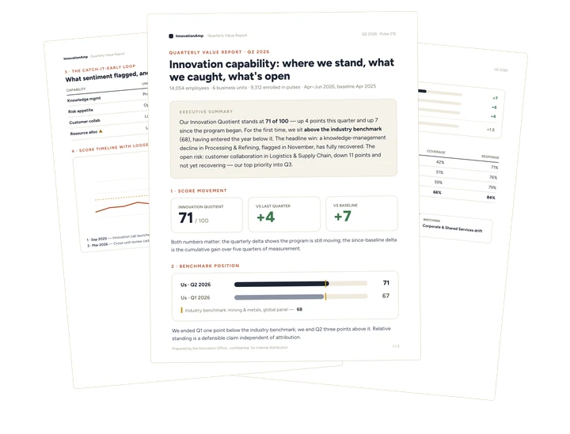

What you get
Weak signals, made legible
Overview
One score, company-wide or by business unit. Your Innovation Quotient, tracked against your own history and the industry benchmark — switch views without waiting on a report.


Drill-down
Cut every ISO 56002 component by business unit, job function, tenure, or site. When a capability divides opinion instead of averaging out, it's flagged, not smoothed over.


Reporting
A quarterly report generated straight from pulse data, ready to forward to whoever holds the budget: what moved, what was flagged, what's still open. Nothing manually assembled, so the numbers always match the dashboard.

